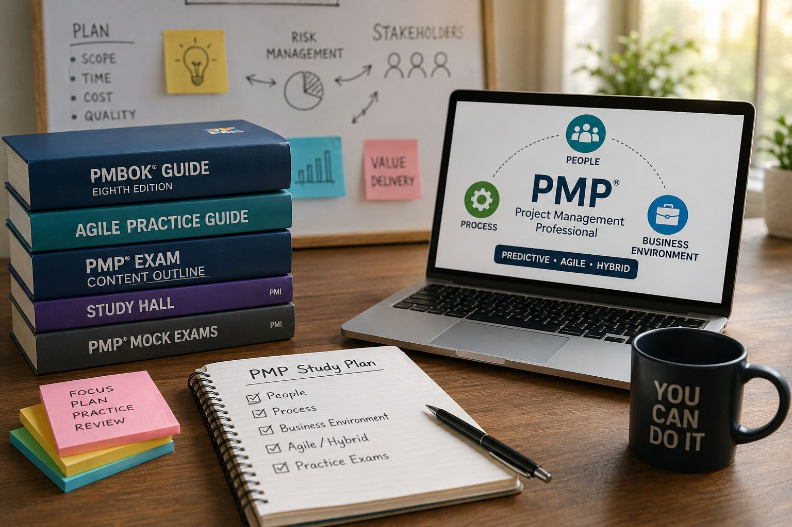

أفضل الكتب والمصادر لدراسة PMP والاستعداد للاختبار 2026

إذا كنت تستعد للحصول على شهادة PMP – Project Management Professional، فمن أكثر الأسئلة التي ستواجهك في بداية رحلتك:
ما أفضل كتاب لدراسة PMP؟ وهل يكفي PMBOK وحده لاجتياز الاختبار؟
الإجابة المختصرة: لا تعتمد على كتاب واحد.
التحضير الجيد لاختبار PMP يحتاج إلى مزيج من المصادر الرسمية، وفهم طريقة تفكير PMI، والتدرب على الأسئلة الموقفية، ومراجعة Agile وHybrid إلى جانب إدارة المشاريع التقليدية.
وهذا أصبح أكثر أهمية بعد إطلاق اختبار PMP المحدث في يوليو 2026؛ إذ أصبح التركيز أكبر على بيئة الأعمال والقيمة والاستدامة والذكاء الاصطناعي، مع استمرار الاختبار في قياس قدرتك على اتخاذ القرار داخل مواقف عملية، وليس مجرد حفظ المصطلحات.
إذا كنت تريد دراسة المحتوى بطريقة منظمة والحصول على تدريب يساعدك على الاستعداد للاختبار، يمكنك الاطلاع على دورة PMP في إدارة المشاريع الاحترافية من معهد مسارتك.
الخلاصة السريعة: ما أفضل مصادر دراسة PMP؟
إذا أردت بناء مكتبة تحضير قوية، ابدأ بهذا الترتيب:
PMP Exam Content Outline 2026
PMBOK Guide – Eighth Edition
Agile Practice Guide
PMI Study Hall
أسئلة ومحاكاة اختبار PMP
دورة تدريبية منظمة للتحضير للاختبار
كتاب تحضيري إضافي محدث لاختبار 2026 عند الحاجة
ولا تحاول قراءة جميع الكتب المتاحة عن إدارة المشاريع.
المصدر الأفضل ليس المصدر الأكبر، وإنما المصدر الذي يغطي ما سيُقاس فعليًا في الاختبار ويساعدك على تطبيق المفهوم داخل سيناريو.
لا.
وهذه من أهم النقاط التي يجب فهمها قبل البدء في الدراسة.
دليل PMBOK هو المرجع الأساسي لمعايير وممارسات إدارة المشاريع الصادرة عن Project Management Institute – PMI، لكنه ليس كتاب أسئلة اختبار ولا يمثل بمفرده كل ما تحتاج إليه للاستعداد لشهادة PMP.
PMI نفسها تعرض عدة مراجع للتحضير، من بينها PMBOK وAgile Practice Guide ومجموعة أخرى من مراجع إدارة المشاريع، إلى جانب Exam Content Outline وأدوات التدريب والمحاكاة.
لذلك فإن الاستراتيجية الأفضل هي:
PMBOK للفهم + ECO لمعرفة المطلوب + Agile لفهم العمل التكيفي + أسئلة ومحاكاة لتعلم اتخاذ القرار.
قبل أن تفتح أي كتاب، ابدأ بـ PMP Exam Content Outline أو ECO.
لماذا؟
لأنه الوثيقة التي تحدد ما الذي يقيسه اختبار PMP فعليًا.
وفق هيكل الاختبار المحدث، تنقسم الأسئلة بين ثلاثة مجالات رئيسية:
| المجال | الوزن في الاختبار |
|---|---|
| People | 33% |
| Process | 41% |
| Business Environment | 26% |
كما أن أساليب إدارة المشاريع ليست منفصلة في الاختبار؛ فالمواقف والأسئلة تشمل Predictive وAgile وHybrid عبر المجالات المختلفة.
ويشير المخطط الرسمي للاختبار إلى أن نحو 40% من المحتوى يمثل الأساليب التنبؤية، بينما تتوزع النسبة المتبقية على Agile وHybrid.
لماذا يعتبر ECO مهمًا؟
لأنه يساعدك على:
معرفة المجالات التي تحتاج إلى دراستها.
تحديد أولويات المراجعة.
اكتشاف أي نقص في خطة الدراسة.
فهم المهام المتوقعة من مدير المشروع.
ربط الكتب والأسئلة بمحاور الاختبار الحقيقية.
قاعدة مهمة
لا تدرس PMP بترتيب كتاب فقط.
ادرس وفق خريطة الاختبار نفسها.
يأتي PMBOK Guide في مقدمة كتب إدارة المشاريع التي يحتاج إليها طالب PMP.
وفي التحضير الحالي يجب الانتباه إلى أن الإصدار الحديث هو:
PMBOK Guide – Eighth Edition.
الإصدار الثامن من PMI صدر في نوفمبر 2025، ويضم ستة مبادئ أساسية وسبعة Performance Domains، مع تغطية أوسع لموضوعات مثل الذكاء الاصطناعي وPMO والمشتريات وإدارة القيمة والاستدامة.
ماذا ستتعلم من PMBOK 8؟
يساعدك الدليل على فهم:
إدارة نطاق المشروع.
الجدول الزمني.
التمويل والتكاليف.
إدارة المخاطر.
الموارد.
أصحاب المصلحة.
الحوكمة.
تحقيق القيمة.
اختيار أسلوب العمل المناسب.
Tailoring.
القيادة والمساءلة.
الاستدامة.
استخدام التقنيات الحديثة في إدارة المشاريع.
لكن لا تقرأ PMBOK وكأنه رواية يجب حفظ كل صفحة فيها.
حاول دائمًا الإجابة عن سؤالين:
لماذا يتم استخدام هذه الممارسة؟
و:
متى يختار مدير المشروع هذا الإجراء؟
هنا تبدأ في التفكير بالطريقة التي تحتاجها أسئلة PMP.
من الأخطاء الشائعة لدى بعض المتقدمين لـPMP التركيز على إدارة المشاريع التقليدية فقط.
الاختبار الحديث لا يتعامل مع Agile كموضوع جانبي.
بل يجب أن تكون قادرًا على التعامل مع:
Predictive.
Agile.
Hybrid.
لذلك يعد Agile Practice Guide من المصادر المهمة في التحضير.
وتضع PMI الدليل ضمن مراجع التحضير الرسمية لاختبار PMP.
ماذا تدرس في Agile Practice Guide؟
ركز بصورة خاصة على:
Agile Mindset.
الفرق ذاتية التنظيم.
Servant Leadership.
Product Backlog.
Iterations.
Sprint.
Kanban.
Scrum.
Incremental Delivery.
Continuous Feedback.
Prioritization.
Stakeholder Collaboration.
Hybrid Approaches.
لا تحفظ Agile كمصطلحات
في الاختبار قد يأتيك موقف يتغير فيه نطاق المشروع باستمرار.
السؤال الحقيقي لن يكون:
ما تعريف Agile؟
بل قد يكون:
ما الإجراء الأنسب الذي يجب أن يتخذه مدير المشروع في هذه الحالة؟
وهنا يظهر الفرق بين الحفظ والفهم.
بعد بناء الأساس النظري، يجب أن تنتقل إلى التدريب.
وأحد أهم المصادر الرسمية لذلك هو:
PMI Study Hall.
توفر الأداة أسئلة تدريبية واختبارات محاكاة ومراجعات قصيرة وقياسًا للأداء، وهي مصممة بما يتوافق مع PMP Exam Content Outline.
لماذا تعتبر محاكاة الاختبار مهمة؟
لأن PMP لا تختبر فقط معرفتك بالمعلومة.
بل تختبر:
تفسير الموقف.
تحديد المشكلة الحقيقية.
فهم دور مدير المشروع.
معرفة الأولوية.
اختيار الإجراء التالي.
التعامل مع الفريق.
التعامل مع أصحاب المصلحة.
إدارة التغيير.
اتخاذ القرار تحت قيود المشروع.
ولهذا يمكن لمتقدم أن يقرأ PMBOK بالكامل ومع ذلك يجد صعوبة في الأسئلة الموقفية إذا لم يتدرب عليها.
إذا كنت تسأل:
ما أفضل طريقة للمراجعة قبل اختبار PMP؟
فالإجابة ليست إعادة قراءة الكتب بالكامل كل مرة.
الأفضل هو حل الأسئلة ثم تحليل الأخطاء.
استخدم اختبارات تجريبية تساعدك على قياس:
People.
Process.
Business Environment.
Predictive.
Agile.
Hybrid.
ولا تنظر فقط إلى نسبة الإجابات الصحيحة.
راقب سبب الخطأ.
أنشئ دفتر أخطاء PMP
لكل سؤال أخطأت فيه سجل:
| العنصر | ماذا تكتب؟ |
|---|---|
| موضوع السؤال | Risk / Agile / Stakeholders… |
| سبب الخطأ | فهم – تسرع – مصطلح – اختيار الإجراء |
| الإجابة التي اخترتها | اختيارك |
| الإجابة الصحيحة | الإجابة الصحيحة |
| لماذا هي صحيحة؟ | القاعدة أو المنطق |
| ماذا أفعل إذا تكرر الموقف؟ | خلاصة قصيرة |
بعد عدة اختبارات ستكتشف أن أخطاءك غالبًا ليست عشوائية.
قد تجد مثلًا أنك تخطئ باستمرار في:
Change Requests.
Stakeholder Engagement.
Conflict Resolution.
Agile Teams.
Risk Responses.
وهذه هي الموضوعات التي تحتاج إلى مراجعة حقيقية.
هناك كتب ودورات تحضيرية تجارية معروفة يمكن استخدامها كمصدر إضافي.
لكن توجد قاعدة يجب الالتزام بها في 2026:
تحقق أن المصدر محدث لاختبار PMP الجديد
لا تشترِ كتابًا لمجرد أنه يحمل اسم PMP.
بعض الكتب الممتازة تاريخيًا قد تكون مبنية على إصدار أقدم من Exam Content Outline.
لذلك تحقق من:
تاريخ آخر تحديث.
دعم PMBOK 8.
توافق المحتوى مع Exam Content Outline 2026.
تغطية Business Environment.
تغطية Agile وHybrid.
تغطية الموضوعات الحديثة مثل Value Delivery والاستدامة والذكاء الاصطناعي.
استخدم هذه الكتب لتبسيط المفاهيم، ولكن لا تجعلها بديلًا عن المصادر الرسمية.
تدرج PMI مجموعة من الكتب والمراجع التي استند إليها المتخصصون المشاركون في تطوير أسئلة الاختبار.
ومن أمثلتها:
Project Management: A Systems Approach to Planning, Scheduling, and Controlling
من تأليف Harold Kerzner.
مرجع شامل في إدارة المشاريع والتخطيط والتحكم.
Effective Project Management: Traditional, Agile, Extreme, Hybrid
من تأليف Robert K. Wysocki.
من الكتب المفيدة لفهم الفرق بين طرق إدارة المشاريع المختلفة واختيار النهج المناسب.
Essential Scrum
من تأليف Kenneth S. Rubin.
مصدر مفيد لمن يريد تعميق فهم Scrum والعمل الرشيق.
Project Management: The Managerial Process
من تأليف Erik Larson.
يساعد على فهم إدارة المشروع من منظور إداري وتطبيقي.
The Project Management Tool Kit
من تأليف Tom Kendrick.
يركز على مجموعة من الأدوات والأساليب العملية لإدارة المشاريع.
وتوضح PMI أن قائمتها المرجعية عبارة عن مصادر استشهد بها محترفو المشاريع أثناء تطوير الأسئلة، وليست قائمة كتب يجب على كل متقدم قراءتها بالكامل.
وهذه نقطة مهمة جدًا.
لا تحوّل التحضير لـPMP إلى مشروع لقراءة عشرة كتب.
إذا كنت تفضل الدراسة باللغة العربية، فمن الأفضل استخدام منهج يجمع بين:
شرح عربي + المصطلحات الإنجليزية الأصلية.
على سبيل المثال:
إدارة أصحاب المصلحة
Stakeholder Management
إدارة المخاطر
Risk Management
النطاق
Scope
الجدول الزمني
Schedule
القيمة المكتسبة
Earned Value
لماذا؟
لأن المصطلح الإنجليزي سيظهر لك باستمرار في المراجع والبرامج وبيئة العمل.
والاختبار نفسه متاح باللغة العربية ضمن اللغات التي توفرها PMI حاليًا.
لذلك لا تجعل اللغة حاجزًا أمام الدراسة، لكن حاول بناء قاموسك المهني باللغتين.
كلا الخيارين ممكن، لكن الاختيار يعتمد على خبرتك وطريقة تعلمك.
الدراسة الذاتية تناسبك إذا كنت:
لديك خبرة قوية في إدارة المشاريع.
تستطيع الالتزام بخطة دراسة.
معتادًا على التعلم من الكتب.
تفهم Agile وPredictive.
تستطيع تحليل الأسئلة بنفسك.
الدورة التدريبية تناسبك أكثر إذا كنت:
تريد خطة واضحة للدراسة.
لا تعرف من أين تبدأ.
تحتاج إلى شرح المفاهيم.
تريد ممارسة الأسئلة.
تحتاج إلى مناقشة السيناريوهات.
ترغب في إكمال متطلبات التدريب المطلوبة للتقديم.
يمكنك التعرف على برنامج دورة PMP من معهد مسارتك بالرياض وأونلاين لمعرفة المحتوى التدريبي وطريقة الدراسة والدفعات المتاحة.
لا أنصح بهذا الترتيب:
PMBOK من أول صفحة إلى آخر صفحة ثم Agile ثم الأسئلة.
الأفضل تقسيم الدراسة إلى مراحل.
المرحلة الأولى: تعرف على الاختبار
اقرأ PMP Exam Content Outline.
تعرف على:
People
Process
Business Environment.
المرحلة الثانية: تعلم المفاهيم
ادرس الموضوعات الرئيسية في PMBOK ودورتك التدريبية.
ركز على:
People.
Stakeholders.
Scope.
Schedule.
Cost.
Quality.
Risk.
Procurement.
Governance.
Business Value.
المرحلة الثالثة: Agile وHybrid
خصص دراسة مستقلة لـ:
Agile.
Scrum.
Kanban.
Servant Leadership.
Adaptive Planning.
Hybrid Delivery.
المرحلة الرابعة: الأسئلة
ابدأ مجموعات صغيرة:
20 إلى 30 سؤالًا.
ثم:
50 إلى 60 سؤالًا.
ثم انتقل إلى محاكاة كاملة.
المرحلة الخامسة: تحليل نقاط الضعف
لا تراجع كل شيء بنفس القوة.
راجع ما تخطئ فيه.
المرحلة السادسة: الاختبارات الكاملة
اختبار PMP الحالي يتكون من 180 سؤالًا خلال 240 دقيقة.
لذلك تحتاج أيضًا إلى تدريب نفسك على:
التركيز لفترة طويلة.
توزيع الوقت.
عدم التوقف طويلًا عند سؤال واحد.
المحافظة على جودة اتخاذ القرار حتى نهاية الاختبار.
| المصدر | أهميته | الأولوية |
|---|---|---|
| PMP Exam Content Outline | معرفة ما يقيسه الاختبار | ضروري جدًا |
| PMBOK Guide 8 | فهم معيار إدارة المشاريع | ضروري |
| Agile Practice Guide | Agile وHybrid | ضروري |
| دورة PMP | تنظيم الدراسة وشرح المفاهيم | مهم |
| PMI Study Hall | التدريب على الأسئلة | مهم جدًا |
| Mock Exams | الاستعداد للاختبار | مهم جدًا |
| كتب PMP الخارجية | تبسيط وتوسيع الشرح | إضافي |
| YouTube والمقالات | شرح نقطة محددة | مساعد |
ملخصات PMP المختصرة جدًا
مفيدة للمراجعة النهائية، لكنها ليست مناسبة لبناء فهم كامل.
Dumps وأسئلة الحفظ
هدف PMP هو قياس الكفاءة المهنية، وليس حفظ بنك أسئلة.
الأفضل استخدام أسئلة تدريبية شرعية تشرح لماذا الإجابة صحيحة.
كتاب قديم دون التحقق من الإصدار
قد تتعلم معلومة صحيحة في إدارة المشاريع ولكنها لا تعكس تركيز الاختبار الحالي.
فيديوهات متفرقة دون خطة
مشاهدة عشرات الفيديوهات لا تعني أنك درست PMP.
يجب أن تعرف:
ماذا درست؟
وماذا بقي؟
وما نقاط ضعفك؟
استخدم قاعدة:
Learn Practice Analyze Review
Learn – تعلم
افهم المفهوم.
Practice – طبق
حل أسئلة عليه.
Analyze – حلل
اعرف لماذا أخطأت.
Review – راجع
ارجع للمفهوم الذي سبب الخطأ.
ثم أعد الدورة مرة أخرى.
هذه الطريقة أكثر فاعلية من قراءة الكتاب ثلاث مرات دون اختبار نفسك.
توجد حسابات ومؤشرات تحتاج إلى فهمها، ومنها مفاهيم مرتبطة بـ:
Earned Value.
Cost Performance.
Schedule Performance.
Forecasting.
Communication Channels.
لكن لا تجعل استعدادك قائمًا على حفظ عشرات الصيغ.
الأهم هو أن تعرف:
ماذا يعني الرقم بالنسبة إلى حالة المشروع؟
لأن مدير المشروع لا يستخدم المؤشر لمجرد حسابه؛ بل لاتخاذ قرار.
Agile ليس فصلًا صغيرًا تحفظه قبل الاختبار.
يجب أن تفهم طريقة التفكير.
مثلًا:
في البيئة التنبؤية قد تكون الخطة أكثر تفصيلًا من البداية.
أما في البيئة التكيفية فقد يتم تطوير الحل تدريجيًا مع الحصول على Feedback مستمر.
وفي البيئة الهجينة قد تستخدم المؤسسة عناصر من الطريقتين.
لذلك عند حل السؤال اسأل أولًا:
ما نوع البيئة التي يعمل فيها الفريق؟
ثم حدد الإجراء المناسب.
إذا كنت مبتدئًا تمامًا في إدارة المشاريع
قد يكون من الأفضل أولًا بناء الأساسيات.
وإذا لم تكن لديك الخبرة المطلوبة لـPMP أصلًا، يمكنك التعرف على دورة CAPM للمبتدئين في إدارة المشاريع.
CAPM تساعدك على تعلم لغة إدارة المشاريع قبل الانتقال إلى مستوى PMP عندما تستوفي متطلبات الخبرة.
إذا كنت مدير مشروع ولديك خبرة
ركز على:
ECO.
PMBOK.
Agile.
الأسئلة الموقفية.
Mock Exams.
إذا كانت مشكلتك في إدارة المخاطر
يمكنك تعميق معرفتك من خلال دورة إدارة المخاطر PMI-RMP، خاصة إذا كان عملك يتضمن تحليل المخاطر ووضع خطط الاستجابة والمتابعة.
إذا كنت تفهم الإدارة ولكن تحتاج أداة للتخطيط
يمكنك بعد بناء أساس PMP تطوير الجانب التطبيقي من خلال دورة Microsoft Project لتعلم بناء الجداول الزمنية وإدارة الموارد والمسار الحرج ومتابعة تنفيذ المشاريع.
بهذه الطريقة لا تصبح شهادة PMP معرفة نظرية فقط، بل تتحول إلى مهارات قابلة للتطبيق في العمل.
من أكثر الأسئلة بحثًا:
هل PMP هي PMBOK؟
لا.
PMP شهادة مهنية.
أما PMBOK فهو دليل ومعيار في إدارة المشاريع صادر عن PMI.
بمعنى آخر:
تدرس PMBOK كأحد المصادر التي تساعدك على تطوير معرفتك والاستعداد لـPMP، لكن اختبار PMP لا يساوي اختبارًا في كتاب PMBOK فقط.
لا توجد مدة واحدة مناسبة للجميع.
تعتمد مدة الاستعداد على:
خبرتك.
معرفتك السابقة.
عدد ساعات الدراسة يوميًا.
مستوى اللغة.
خبرتك في Agile.
نتائج الاختبارات التجريبية.
الشخص الذي يدير مشاريع يوميًا لا يبدأ من النقطة نفسها التي يبدأ منها شخص يتعرف لأول مرة على إدارة أصحاب المصلحة أو المخاطر.
لذلك لا تسأل فقط:
كم أسبوعًا أحتاج؟
اسأل:
هل وصلت إلى مستوى ثابت من الفهم والأداء في جميع مجالات الاختبار؟
حفظ الإجابات بدل فهمها
السؤال قد يتغير لكن المفهوم واحد.
تجاهل Agile
من أكبر الأخطاء.
الاعتماد على PMBOK فقط
PMI نفسها تعرض عدة مصادر للتحضير.
استخدام مصدر قديم
تحقق دائمًا من سنة التحديث.
حل الأسئلة دون مراجعة الأخطاء
عدد الأسئلة ليس هو الهدف.
تحسن قراراتك هو الهدف.
دراسة جميع الموضوعات بنفس الوقت
ركز على نقاط ضعفك.
إذا كنت تريد خطة بسيطة قابلة للتنفيذ:
الأسبوع الأول
فهم ECO.
أساسيات PMP.
People.
أدوار مدير المشروع والفريق.
الأسبوع الثاني
Planning.
Scope.
Schedule.
Cost.
Quality.
الأسبوع الثالث
Risk.
Stakeholders.
Procurement.
Business Environment.
الأسبوع الرابع
Agile.
Scrum.
Hybrid.
Adaptive approaches.
الأسبوع الخامس
أسئلة مكثفة.
تحليل الأخطاء.
مراجعة نقاط الضعف.
الأسبوع السادس
Mock Exams.
مراجعات نهائية.
تحسين إدارة الوقت.
هذه مجرد خريطة مقترحة، ويمكن ضغطها أو تمديدها حسب مستواك.
ما أفضل كتاب لـPMP في 2026؟
ابدأ بـ PMBOK Guide – Eighth Edition كمصدر رئيسي للمعيار، ولكن لا تعتمد عليه منفردًا. استخدم أيضًا PMP Exam Content Outline وAgile Practice Guide والأسئلة التجريبية.
هل PMBOK 7 ما زال مفيدًا؟
يمكن أن يحتوي على مفاهيم مفيدة، لكن الإصدار الأحدث حاليًا هو PMBOK Guide – Eighth Edition؛ لذلك يجب ألا تعتمد على مصدر قديم وحده عند التحضير للاختبار الحالي.
هل PMBOK 8 يكفي للنجاح في PMP؟
لا. تحتاج أيضًا إلى معرفة مخطط الاختبار، وفهم Agile وHybrid، والتدرب على الأسئلة الموقفية والمحاكاة.
هل اختبار PMP يعتمد على الحفظ؟
الاختبار يعتمد بصورة كبيرة على فهم المواقف المهنية واختيار القرار الأنسب، لذلك الفهم والتطبيق أهم من حفظ التعريفات.
ما أفضل مصدر لأسئلة PMP؟
تعتبر أدوات PMI الرسمية مثل PMI Study Hall من المصادر المهمة للتدرب على الأسئلة والمحاكاة المتوافقة مع Exam Content Outline.
هل أستطيع دراسة PMP بالعربي؟
نعم. اختبار PMP متاح باللغة العربية حاليًا، ومن المفيد أثناء الدراسة الجمع بين الشرح العربي والمصطلحات الإنجليزية المستخدمة في إدارة المشاريع.
ما الفرق بين PMP وCAPM؟
PMP موجهة للمهنيين الذين لديهم خبرة موثقة في قيادة المشاريع ويستوفون شروط PMI، أما CAPM فهي شهادة تأسيسية مناسبة لمن يبدأ مساره في إدارة المشاريع.
يمكنك مراجعة دورة CAPM في معهد مسارتك إذا كنت لا تزال في بداية المسار.
هل دورة PMP تغني عن قراءة الكتب؟
الدورة الجيدة تساعدك على تنظيم المعرفة وفهم المفاهيم والتدرب، لكن يظل الرجوع إلى المراجع الرسمية وممارسة الأسئلة جزءًا مهمًا من عملية الاستعداد.
أفضل طريقة للاستعداد لاختبار PMP ليست البحث عن كتاب سحري يضمن النجاح.
بل بناء نظام دراسة يجمع بين:
PMP Exam Content Outline لمعرفة المطلوب.
PMBOK Guide 8 لبناء فهم قوي لإدارة المشاريع.
Agile Practice Guide لفهم Agile وHybrid.
الأسئلة والمحاكاة لتطوير قدرتك على اتخاذ القرار.
دورة تدريبية منظمة إذا كنت تحتاج إلى شرح وتوجيه وخطة دراسة واضحة.
والقاعدة الأهم:
لا تدرس PMP بهدف حفظ الإجابة الصحيحة؛ ادرسها حتى تعرف لماذا هذا القرار هو الأفضل لمدير المشروع.
إذا كنت تريد البدء بخطة منظمة تجمع بين مبادئ إدارة المشاريع وAgile وHybrid والتدريب على الأسئلة، تعرف على دورة إدارة المشاريع الاحترافية PMP من معهد مسارتك بالرياض وأونلاين.
ويمكنك كذلك استعراض جميع دورات معهد مسارتك لبناء المسار التدريبي المناسب لخبرتك وهدفك المهني.
بيانات SEO المقترحة
SEO Title:
أفضل كتب ومصادر دراسة PMP 2026 | دليلك للتحضير للاختبار
Meta Description:
تعرف على أفضل الكتب والمصادر لدراسة PMP في 2026، من PMBOK 8 وAgile Practice Guide إلى PMI Study Hall وأسئلة المحاكاة، مع خطة عملية للتحضير لاختبار PMP.
الكلمة المفتاحية الرئيسية:
أفضل كتب PMP
كلمات مفتاحية ثانوية:
مصادر دراسة PMP، أفضل مصادر PMP 2026، كتب PMP بالعربي، كتاب PMP، PMBOK 8، كيفية دراسة PMP، التحضير لاختبار PMP، أسئلة PMP، مراجع PMP، دورة PMP، أفضل كتاب لاختبار PMP
Search Intent:
Informational Commercial Investigation Course Registration
Featured Snippet المقترح:
أفضل مصادر دراسة PMP في 2026 هي PMP Exam Content Outline، وPMBOK Guide الإصدار الثامن، وAgile Practice Guide، وPMI Study Hall، إلى جانب الاختبارات التجريبية ودورة تدريبية منظمة. ولا يُنصح بالاعتماد على PMBOK وحده لاجتياز الاختبار.
Slug مقترح:
/blog/best-pmp-books-study-resources
دورات ذات صلة
دورة CIPD للموارد البشرية | تدريب احترافي في People Practice وPeople Management أونلاين وحضوري بالري
المدة: 5 Days
أقرب موعد: سيتم تحديده قريبًا
دورة ITIL 4 Drive Stakeholder Value بالرياض | احتراف إدارة القيمة
المدة: 5 Days
أقرب موعد: سيتم تحديده قريبًا
عرض تفاصيل البرنامج
دورة PfMP بالرياض | شهادة مدير المحافظ الاحترافية – ابدأ مسارك القيادي
المدة: 5 Days
أقرب موعد: سيتم تحديده قريبًا
دورة CCMP™ بالرياض | شهادة إدارة التغيير الاحترافية – سجّل الآن
المدة: 5 Days
أقرب موعد: سيتم تحديده قريبًا
دورة eCPPT الاحترافية | احتراف اختبار الاختراق السيبراني في معهد مسارتك
المدة: 5 Days
أقرب موعد: سيتم تحديده قريبًا
عرض تفاصيل البرنامج
دورة PgMP بالرياض | شهادة مدير البرامج الاحترافية – احجز مقعدك الآن
المدة: 5 Days
أقرب موعد: سيتم تحديده قريبًا
دورة MCSE Data Management and Analytics بالرياض | احتراف تحليل البيانات وSQL Server
المدة: 5 Days
أقرب موعد: سيتم تحديده قريبًا
عرض تفاصيل البرنامج
دورة Microsoft Developing SQL بالرياض | تطوير قواعد البيانات الاحترافية
المدة: 5 Days
أقرب موعد: سيتم تحديده قريبًا
عرض تفاصيل البرنامج